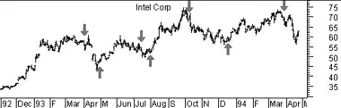
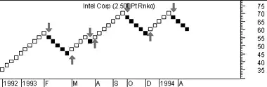

The Renko charting method is thought to have acquired its name from "renga" which is the Japanese word for bricks. Renko charts are similar to Three Line Break charts except that in a Renko chart, a line (or "brick" as they're called) is drawn in the direction of the prior move only if prices move by a minimum amount (i.e., the box size). The bricks are always equal in size. For example, in a 5-unit Renko chart, a 20-point rally is displayed as four, 5-unit tall Renko bricks.
Kagi charts were first brought to the United States by Steven Nison when he published the book, Beyond Candlesticks.Basic trend reversals are signaled with the emergence of a new white or black brick. A new white brick indicates the beginning of a new up-trend. A new black brick indicates the beginning of a new down-trend. Since the Renko chart is a trend following technique, there are times when Renko charts produce whipsaws, giving signals near the end of short-lived trends. However, the expectation with a trend following technique is that it allows you to ride the major portion of significant trends.
Since a Renko chart isolates the underlying price trend by filtering out the minor price changes, Renko charts can also be very helpful when determining support and resistance levels.
The following charts show Intel as a classic high-low-close bar chart and as a 2.5-unit Renko chart.
  I drew "buy" and "sell" arrows on both charts when trend reversals occurred in the Renko chart. You can see that although the signals were late, they did ensure that you invested with the major trend.Renko charts are always based on closing prices. You specify a "box size" which determines the minimum price change to display.
To draw Renko bricks, today's close is compared with the high and low of the previous brick (white or black):
If prices move more than the box size, but not enough to create two bricks, only one brick is drawn. For example, in a two-unit Renko chart, if the prices move from 100 to 103, only one white brick is drawn from 100 to 102. The rest of the move, from 102 to 103, is not shown on the Renko chart.